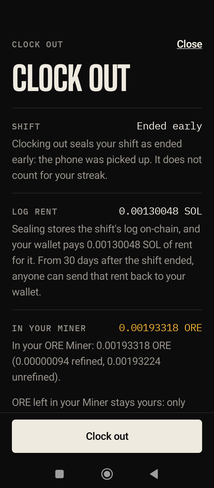

Heads Down
Your phone'snight shift.
Face-down, it digs ORE. Pick it up, the rig goes cold.
A focus timer whose tree is an ORE rig. Any Android.

The night
One approval at bedtime. The phone works the shift. Your alarm ends it.
| 1 | Tap Clock in, in the app or on its Quick Settings tile. | On the Redmi |
| 2 | One wallet approval funds a capped shift in your own ORE Automation and arms the rig. | On mainnet |
| 3 | Face-down, the phone signs a heartbeat every ORE round, about a minute. | On mainnet |
| 4 | A dig happens only when the on-chain price gate is open. | On mainnet |
| 5 | Pick it up: 10 s of cooling, then cold. Unlock: cold at once. | On mainnet |
| 6 | In the morning the reveal page shows the shift. Clock out there, and it replays the night from chain data. | On the Redmi |
| 7 | One approval seals the shift. Take your SOL back whenever you like. | On mainnet |


Plain about money
Mining is one route to ORE, not income. The rig digs only under a price ceiling, and the reveal shows the market price beside yours.

| 58,801 real ORE rounds, 47 nights | Against buying |
|---|---|
| Dig every round | +36% to +90% |
| Dig 0.001 SOL chunks when the gate opens, buy the rest | −1.4% to −3.0% |
This rig
20 digs placed 0.02 SOL. The 19 settled sent 0.017 SOL back and mined 0.0019 ORE: about 1.13 SOL per ORE, on a small sample.
The demo
A default build's ceiling (0.53) is under ORE's cost figure (0.85 on 12 October), so it does not dig. The filmed build plans 1.0 under a signed ceiling of 1.2. The backtest charged 5,000 lamports a dug round; mainnet charges 10,000.
Native Android
Native Kotlin and Compose, on system surfaces a web app cannot reach.
- Quick Settings tile or the app, then one wallet approval (Mobile Wallet Adapter 2.2.0)
- One clock-in transaction: ORE automate, register, caps, arm
- Foreground service. Killed by the OS means cold, nothing spent
- HyperOS keep-alive setup and a “killed last night” check
- Android 16 Live Update notification, with a 14/15 fallback
- Home-screen widgets, haptics, and a reveal aligned to your own alarm
1,440
JVM unit tests passed; 5 more are skipped
Redmi 14C
Android 16, HyperOS 3, accelerometer only. Since 10 Oct 2026: setup, a TEE rig key, attestation and ten shifts on mainnet.
On mainnet
Proof
On mainnet since 10 October 2026. Every shift, dig and lamport below is public.
| Program deployed, slot 455,359,196 | 4naP…Pae2 |
| Crank, registrar, indexer, dashboard | live, on Railway |
| Clock-in from the Redmi 14C, signed in Jupiter | 4DvP…aQht |
| First dig, ORE round 435,224 | 25nB…zovY |
| The pickup, and the BREAK the phone signed | 63FZ…yqVb |
| Clock-out | 3Vfb…uTUm |
| SOL taken back: 0.00502704 SOL, what the screen said, to the lamport | 46NX…DcFF |
| To 11 Oct: 5 more shifts, 15 digs in 15 rounds | 0.0019 ORE mined |
| Night of 12 Oct: three hours, about 170 heartbeats, 5 digs | 3Ngn…JJgf |
| 12 Oct: shift completed, 37 dark rounds, 10 SKR back | BaiM…Lvdt |

Open, and next
What protects the user, what is still open, and what comes next.
What protects the user
- The phone's key cannot leave its Keystore, and acts only inside limits the wallet signed
- Success is shown only after the chain confirms it
- Every key has a written worst case
Open today
- One key, the founder's, can upgrade the program
- No third-party audit; a debug-signed APK, not on the dApp Store
- Not run on a Seeker; no screen sends the Seeker check yet
- One user so far, the founder. The morning page did not open by itself on this phone.
Next
- The haul already on screen when the alarm rings
- Nights that arm themselves: one approval a week
- A night partner: two phones, one streak
- A multisig, then an immutable v1; the dApp Store